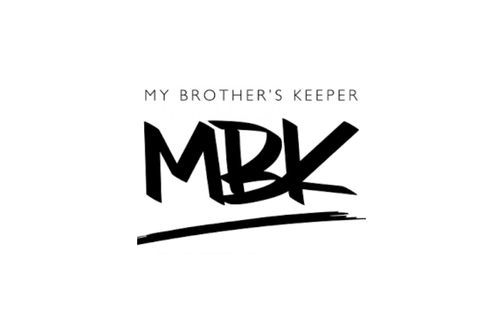

In January 2015, the City of San José joined local governments across the country in accepting the My Brother’s Keeper Community Challenge led by President Obama to ensure that boys and young men of color receive the opportunity to succeed regardless of circumstances. At the Local Action Summit, 9 recommendations were presented: addressing community core values, focusing on outcomes, sharing data, sustainability, policy leverage, scalable efforts, community involvement, family engagement, and cultural competency.

Furthermore, the City of San José will align its efforts on four of the primary goals articulated by the national MBK initiative. These “MBK: SJ Priority Goals” are:
- Entering school ready to learn.
- Reading at grade level by third grade.
- Graduating high school ready for college and career.
- Reducing youth engagement in crime and creating pathways to success.
Read the
Community Action Plan.
Review the
MBK Strategic Plan.